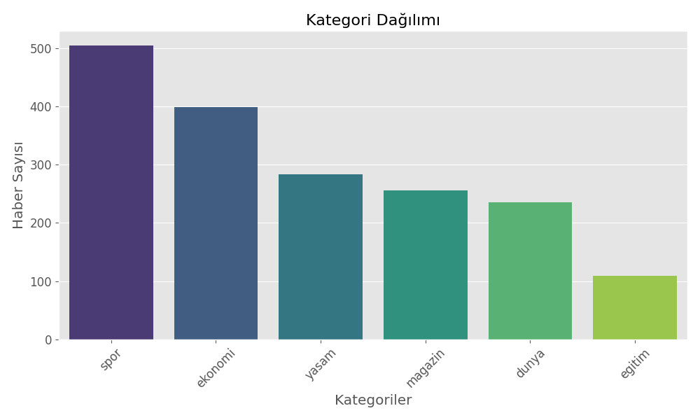
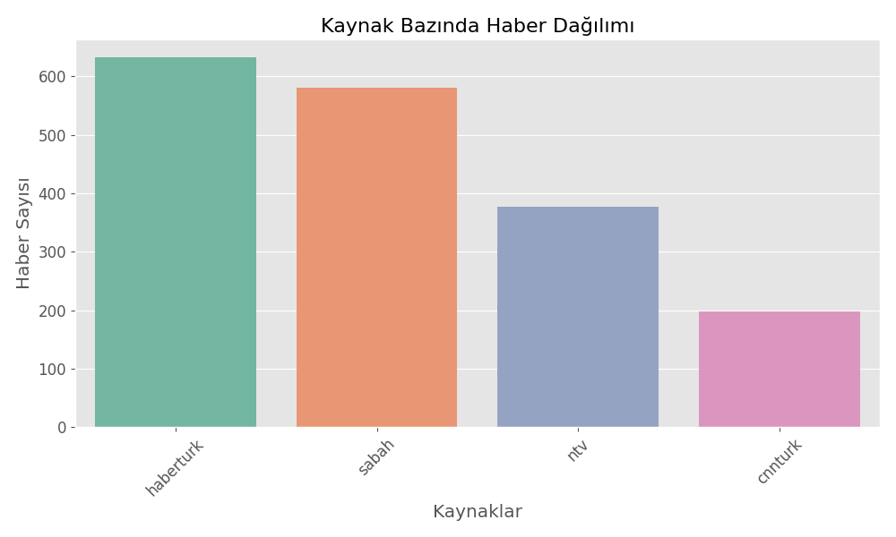
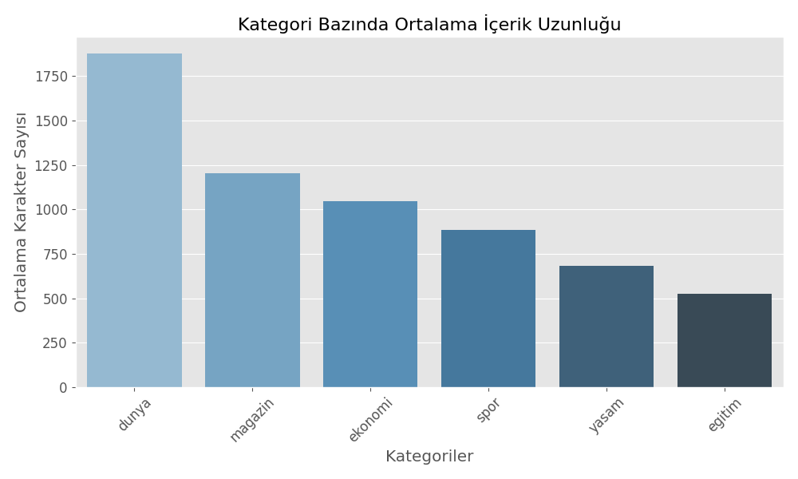
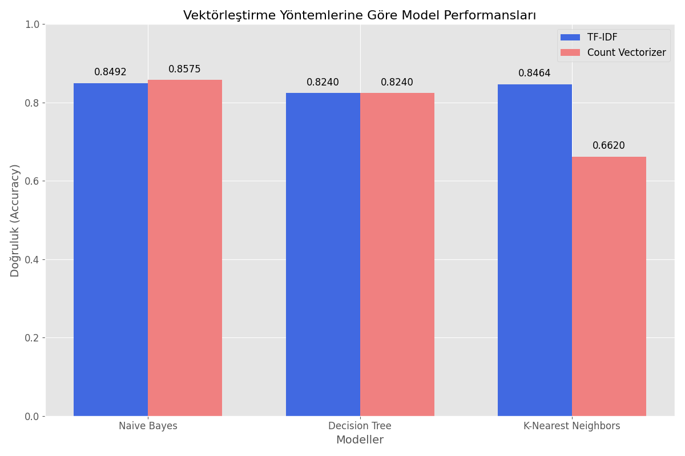

HABER METİNLERİ KATEGORİZASYONU - SONUÇ RAPORU
1. Veri Seti Özeti
Bu projede web kazıma yöntemiyle farklı haber sitelerinden toplanan haber metinleri kullanılmıştır.
- Toplam haber sayısı: 2015
- Filtrelenmiş haber sayısı (6 kategori): 1787
- Kategoriler: Dünya, Ekonomi, Spor, Eğitim, Magazin, Yaşam

Şekil 1: Kategori Dağılımı

Şekil 2: Kaynak Bazında Haber Dağılımı
2. Metin Özellikleri Analizi
Haber metinlerinin özellikleri incelenmiştir:
- Ortalama başlık uzunluğu: 66.06 karakter
- Ortalama içerik uzunluğu: 1042.46 karakter
- Ortalama kelime sayısı: 132.69 kelime

Şekil 3: Kategori Bazında Ortalama İçerik Uzunluğu
3. Model Performans Değerlendirmesi
Farklı vektörleştirme yöntemleri ve sınıflandırma algoritmaları kullanılarak performans karşılaştırması yapılmıştır.

Şekil 4: Vektörleştirme Yöntemlerine Göre Model Performansları
En İyi Performans Gösteren Model
Genel olarak en iyi model: Count Naive Bayes (Doğruluk: 85.75%)
4. Model Performans Analizi
En İyi Model (Count Naive Bayes) Değerlendirmesi
Avantajları:
- Haber metinleri gibi metin verilerinde yüksek başarı sağlar
- Özellikle kısa metinlerde (haber başlıkları) etkilidir
- Eğitim ve tahmin süresi oldukça hızlıdır
- Basit ama etkili bir algoritma olması
Dezavantajları:
- Kategoriler arası doğruluk farklılıkları gösterir
- 'Yaşam' kategorisinde düşük recall değeri (0.61)
- Özellik bağımsızlığı varsayımı gerçek veride tam sağlanamaz
Kategoriler Arası Performans Değerlendirmesi
- En başarılı kategori: Spor (F1-score: 0.95)
- En düşük başarılı kategori: Yaşam (F1-score: 0.76)
- Dünya kategorisinde precision değeri diğerlerine göre daha düşük (0.75)
Olası İyileştirmeler
- Daha fazla veri toplanması
- Vektörleştirme parametrelerinin optimizasyonu
- Word2Vec, Glove gibi ileri düzey kelime temsil yöntemlerinin denenmesi
- Hibrit model yaklaşımları
5. Sonuç ve Gelecek Çalışmalar
Proje Sonuçları:
- Web kazıma yöntemiyle 2015 haber metni elde edildi
- 6 farklı kategori için sınıflandırma yapıldı
- En iyi model 85.75% doğruluk oranı sağladı
- Bazı kategorilerde daha yüksek başarı (Spor: %95)
- Bazı kategorilerde iyileştirme gerekiyor (Yaşam: %76)
Gelecek Çalışmalar:
- Derin öğrenme modelleri (LSTM, GRU) ile performans karşılaştırması
- Daha büyük veri seti ile çalışma
- Türkçe NLP işlemleri için özelleştirilmiş yöntemler
- Alt kategori sınıflandırması (Örn: Spor kategorisinde futbol, basketbol vb.)